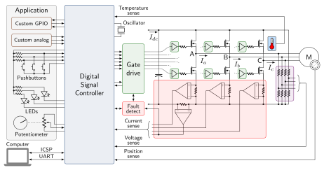
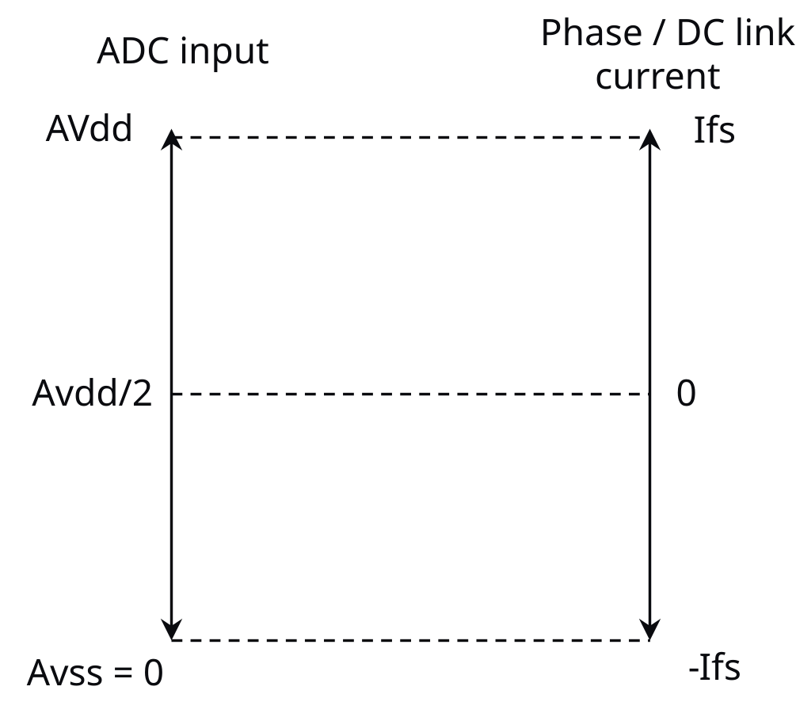
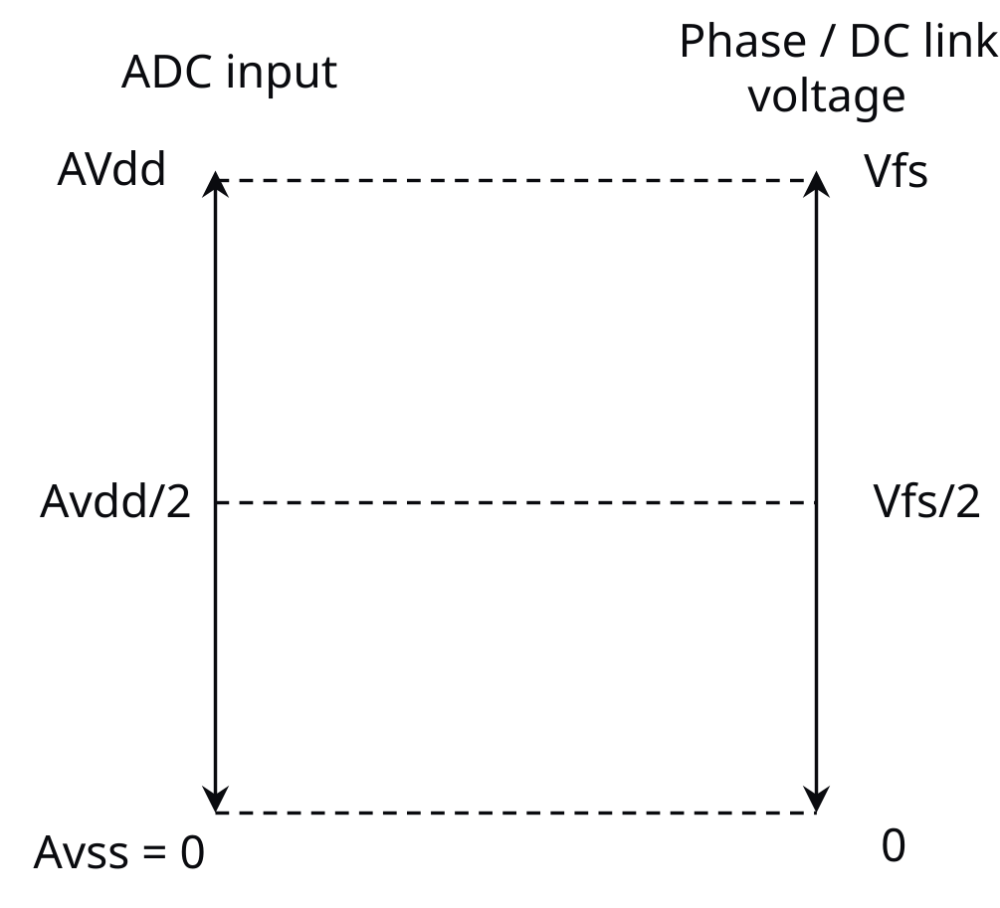

6.6.1. motorBench 中的板卡支持概述® Development Suite¶
MCAF 自 MCAF R8 起支持定制板卡。用户现在可以配置 motorBench® Development Suite，以适配具有各种功能的广泛电机控制板卡。要配置定制板卡，用户可以以板卡定义文件的形式定义板卡配置。然后，motorBench 可以自动配置 MCC 外设，并根据板卡配置和 motorBench 的 Configure（配置）、Tuning（整定）和 Customize（定制）页面中设置的其他参数生成代码。
详见 motorBench 用户指南 以获取更多信息。
6.6.2. 硬件支持范围¶
图 6.7 展示了电机驱动硬件设计中属于 MCAF 板卡支持功能范围的典型组件。
{kind=link}

图 6.7 MCAF 支持的硬件组件¶
注
上图中的电机端子以 A、B、C 表示。MCAF 固件反映了这一命名选择。某些驱动设计或电机可能使用 U、V、W 命名端子；在这种情况下，请分别用 A、B、C 替代 U、V、W。
6.6.2.1. 板卡配置功能¶
下表详列了可为定制板卡配置的功能。
注
请注意， 三种电流测量方法 （单通道、双通道或三通道）中至少需要一种，板卡才能与 motorBench 兼容。
类别 |
支持的板卡功能 |
是否必需 |
说明 |
|---|---|---|---|
器件 |
dsPIC® 数字信号控制器 |
支持以下器件系列：
|
|
MCP802x 栅极驱动器 |
MCC 库支持的 MCP8021/MCP8022/MCP8027 |
||
模拟 |
母线电压测量 |
MCAF 母线电压补偿所需 |
|
相电流——两相 |
双通道和三通道测量需要 A 相和 B 相（三通道还需要 C 相）。 单通道测量需要母线电流测量。 |
||
相电流——三相 |
|||
母线电流 |
|||
相电压——三相 |
|||
用于电流测量的运放 |
dsPIC 内部运放，或外部/分立器件 |
||
电位器 |
MCAF 示例应用用于控制电机速度 |
||
逆变桥温度传感器 |
|||
绝对电压基准 |
|||
定制模拟通道 |
这些通道将在每个 MCAF ADC 中断周期中排队进行顺序采样。 |
||
数字 |
PWM 故障 |
例如过流故障。可设置为 |
|
UART |
实时诊断内核支持所需。建议使用高波特率 UART 支持电路（至少 115.2K 波特，推荐 921.6K 或更高）。 |
||
编程器/调试器 |
需指定编程引脚对（PGD/PGCx） |
||
振荡器 |
内部 FRC/外部时钟/晶振 |
||
内部比较器 |
本版 motorBench 仅支持一个实例 |
||
按钮 |
MCAF 最多支持两个按钮。应用可使用定制 GPIO 定义额外按钮。GPIO 名称 |
||
LED |
MCAF 最多支持两个 LED。应用可使用定制 GPIO 定义额外 LED。GPIO 名称 |
||
测试点 |
MCAF 支持一个测试点。探测该测试点会显示一个 PWM 开关频率的脉冲，表示 MCAF ADC ISR 正在执行的时间间隔。GPIO 名称 |
||
QEI |
本版 motorBench 用于 MCAF 时仅支持一个实例。 |
||
定制 GPIO |
应用特定的数字输入和输出 |
6.6.2.2. 假设¶
6.6.2.2.1. 电流测量¶
MCAF 要求相电流和母线电流测量电路向 ADC 提供具有 \(AV_\text{dd}/2\) 直流偏置的模拟输入，以便能测量从负满量程（\(-I_\text{fs}\)）到正满量程（\(I_\text{fs}\)）范围内的电流，如 图 6.8。
{kind=link}

图 6.8 ADC 输入与被测相/母线电流的规格关系¶
注
MCAF 根据板卡定义文件中给出的满量程相电流来确定板卡的电流比例。板卡定义文件中的满量程母线电流对代码生成过程的任何部分都没有影响。
6.6.2.2.2. 电压测量¶
MCAF 要求母线电压测量电路向 ADC 提供零直流偏置的模拟输入，以便能测量从 0V 到正满量程（\(V_\text{fs}\)）范围内的电流，如 图 6.9。
{kind=link}

图 6.9 ADC 输入与被测相/母线电压的规格关系¶
相同的规格也适用于相电压测量（MCAF 可选支持）。
6.6.3. 板卡定义文件结构¶
板卡定义文件是一个描述各种配置设置的层次化数据模型。motorBench 使用的序列化格式为 YAML；未来版本的 motorBench® Development Suite 。
更多信息请参见 定制板卡定义格式。
6.6.4. 系统参数¶
系统参数是应用特定的属性，可在 motorBench® Development Suite 的 Configure（配置）页面中查看和编辑。它们包括 PWM 频率和死区等参数，这些是应用选择，而非板卡的固有固定属性。因此它们不是板卡定义的一部分——但确实需要满足板卡的约束条件，例如最大 PWM 频率或最小死区。
整体概念类似于在自助餐厅取食物。
餐食 = 手头的项目
食物 = 项目属性/系统参数
盘子 = 板卡
系统参数“在板卡之上”，需要符合板卡的约束。
{kind=link}
可在 motorBench 中配置的系统参数为：
系统参数 |
类型 |
单位 |
可编辑 |
说明 |
|---|---|---|---|---|
使用最大支持的系统时钟频率（Fosc） |
布尔 |
|||
系统时钟频率（Fosc） |
整数 |
MHz |
仅在不使用最大支持系统时钟频率时可编辑。 |
|
PWM 频率 |
浮点 |
kHz |
初始化为默认值 [1] |
|
PWM 死区 |
浮点 |
ns |
初始化为默认值 [1] |
|
电流控制环采样时间系数 |
整数 |
Tpwm |
电流控制环采样时间，以 PWM 周期的倍数表示。 |
|
速度控制环采样时间系数 |
整数 |
Tpwm |
电压控制环采样时间，以 PWM 周期的倍数表示。 |
|
ADC 采样时间 |
浮点 |
ns |
初始化为默认值 [1] |
|
标称母线电压 |
浮点 |
V |
初始化为默认值 [1] |
导入板卡配置文件后，应配置系统参数以满足应用需求。